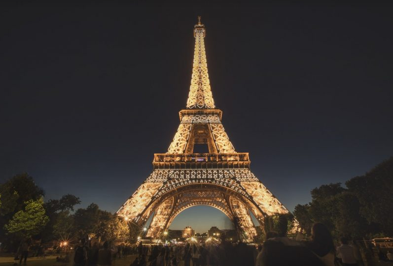
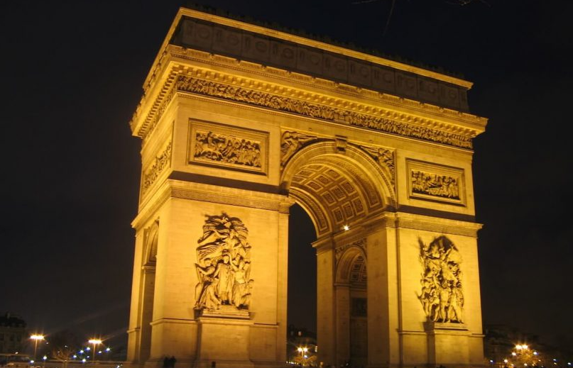
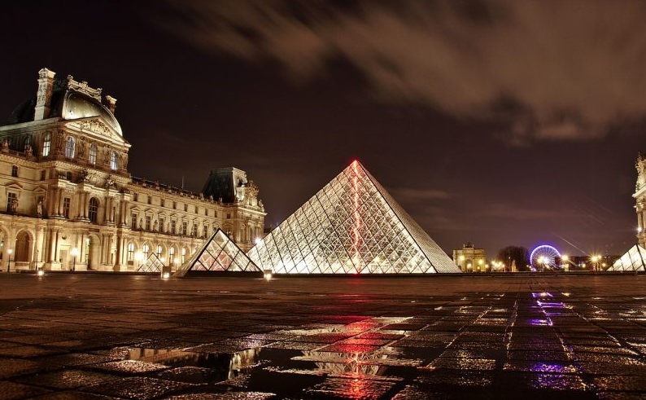

Bem-vindo a EuroTour
Sobre nós
EuroTour é um site que ajuda você a planejar sua viagem para na Europa. desde a compra das passagens até a visita aos pontos turíticos mais importantes de cada região!
Conheça alguns pontos Turísticos:
Paris, França - Torre Eiffel
A Torre Eiffel é um monumento histórico construído na França para a chamada Exposição Universal, evento datado de 1889, no qual foi concretizada uma grande exposição para celebrar o centenário da Revolução Francesa.
Paris,França - Arco do Triunfo
Criada a mando de Napoleão Bonaparte, o Arco do Triunfo celebra a glória dos heróis de guerra. São 50 m de altura e diversas esculturas adossadas aos pilares. Do terraço panorâmico do monumento, é possível admirar a Champs-Elysées.
Paris, França - Museu do Louvre
Um dos mais importantes e famosos museus do mundo, o Louvre abriga mais de 30 mil preciosidades entre pinturas (como a Monalisa, de Leonardo da Vinci), esculturas, gravuras e objetos diversos.